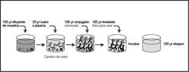

Evaluación de un Kit ELISA para detección de anticuerpos anti. T. cruzi
Dr. Amadeo Saez-Alqueza r1
1 - Consultor científico del PNCQ (Programa Nacional de Control
de Calidad)
San Pablo – Brasil
La transfusión de sangre es una práctica médica irreemplazable, basada en la donación generalmente voluntaria y anónima de sangre, respondiendo a la solicitud de los médicos. Los bancos de sangre tienen como objetivo garantizar que esta práctica se lleve a cabo con alto grado de seguridad desde el punto de vista biológico, evitando la transmisión de agentes infecciosos. Éste es el caso de la enfermedad de Chagas, transmitida por el Tripanosoma cruzi.
La detección de la infección puede realizarse a través de métodos parasitológicos directos para poner en evidencia la presencia del parásito o por métodos serológicos que detecten los anticuerpos anti-T. cruzi.
Las técnicas son numerosas y las pruebas ELISA son las más difundidas en banco de sangre para realizar el tamizaje serológico de esta parasitosis. En la actualidad pueden estar basadas en el uso de extractos citoplasmáticos y de membrana de los parásitos o utilizar antígenos recombinantes y péptidos que pueden detectar IgG e IgM, mostrando reactividad en una etapa más temprana de la infección.
Las actualizaciones en la metodología para detección de esta infección sigue siendo un reto que lleva a la búsqueda de mejores técnicas que permitan una detección en menor tiempo o con mayor sensibilidad y especificidad.
Con esta meta se diseñó un nuevo sistema ELISA (Chagatest ELISA recombinante v.4.0 Wiener lab.) que utiliza pocillos sensibilizados con antígenos recombinantes, conjugado monoclonal y revelador único. Como ventaja para el operador, incluye además un sistema de monitoreo de agregado de muestras y control de las distintas etapas operativas ya que sus reactivos son coloreados.
El presente estudio tuvo como objetivo evaluar el desempeño de este kit frente a paneles de sueros, y en paralelo con una rutina de tamizaje serológico de un servicio de hemoterapia de San Pablo, Brasil.
Se realizó un análisis de la reproducibilidad del kit, con respecto a los controles negativos y positivos y a los sueros control interno utilizados.
De acuerdo con los resultados encontrados fue posible establecer la sensibilidad y la especificidad.
DESCRIPCIÓN DEL PRODUCTO
El kit en evaluación, es un ensayo inmunoenzimático basado en el principio “sándwich” para detección de anticuerpos anti-T. cruzi en suero o plasma humanos.
COMPONENTES DEL KIT
Fase sólida: Microplacas con cavidades recubiertas por seis antígenos recombinantes: SAPA, 1, 2, 13, 30 y 36, específicos de los estadios epimastigote y tripomastigote del Trypanosoma cruzi.
Sueros control:
Control Negativo para anti-T. cruzi
Control Positivo para anti-T. cruzi
Dilución de la muestra: Buffer salino con tensioactivo.
Conjugado: Anticuerpos monoclonales anti-IgG humana conjugados con peroxidasa (10x).
Dilución del conjugado: Buffer salino con proteínas.
Sustrato: Solución de tetrametilbenzidina y peróxido de hidrógeno (TMB).
Stopper: Ácido sulfúrico.
Tampón de lavado concentrado: Buffer salino con tensioactivo (25x).
Lectura de la intensidad de color: En espectrofotómetro a 450/620-650 nm.
El esquema de reacción se muestra en la figura A.

EQUIPAMIENTOS UTILIZADOS
Para realizar los tests fueron utilizados los siguientes equipamientos:
• Incubadora: 5.000 (Organon Teknika);
• Lavadora: Tecan (Abbott);
• Lectora: Spectra-Tecan (Abbott).
REPRODUCIBILIDAD
Determinación de la reproducibilidad de los sueros control negativo y positivo del kit, y de los sueros control interno negativo y positivo.
Sueros control del kit
Fueron realizadas veinte determinaciones del suero control negativo y veinte determinaciones del suero control positivo del kit, cálculo de la Media (M), Desvío Estándar (D.E.) y Coeficiente de Variación (C.V.) (Tabla I).
|
Tabla 1 |
||||
|
Reproducibilidad |
||||
|
Sueros Control del kit |
Sueros control internos |
|||
|
Control |
Control positivo |
Control |
Control positivo |
|
|
Media (DO) |
0.13 |
8.54 |
0.16 |
4.9 |
|
DE |
0.0348 |
0.5451 |
0.0409 |
0.3591 |
|
CV% |
26.82 |
6.38 |
25.75 |
7.33 |
Sueros control interno
Fueron realizadas veinte determinaciones del suero control interno negativo y veinte determinaciones del suero control positivo, cálculo de la Media (M), Desvío Estándar (D.E.) y Coeficiente de Variación (C.V.) (Tabla 1).
Paneles de sueros
Fueron utilizadas 253 muestras de sueros, previamente caracterizadas en cuanto a la reactividad para los tests de uso obligatorio en el tamizaje serológico de donantes de sangre, divididas en 3 paneles de sueros con muestras negativas, heterólogas y positivas.
Panel de sueros negativos para anti-T. cruzi
Fueron analizadas 50 muestras de sueros negativos para todos los parámetros de uso obligatorio en el tamizaje serológico de donantes de sangre en San Pablo, Brasil.
Frente al kit en evaluación, todas las muestras presentaron resultado no reactivo con un índice densidad óptica/cut off (índice DO/CO) menor de 1.
Panel de sueros heterólogos para anti-T. cruzi
Fueron analizadas 103 muestras de sueros negativos para anti-T. cruzi y positivas para algunos de los demás parámetros de uso obligatorio en el tamizaje serológico de donantes de sangre (anti-HIV, anti-HTLV, AgHBs, anti-HBc, anti-T. cruzi y Sífilis) y además Leishmania. La distribución de muestras patológicas puede verse en la tabla 2.
Frente al kit en estudio, una de las muestras presentó resultado próximo al índice DO/CO = 1.0 y las demás muestras presentaron resultados no reactivos: índice DO/CO < 1.0.
Panel de sueros positivos para anti-T. cruzi
Fueron analizadas 100 muestras de sueros positivos para anti-T. cruzi.
Frente al kit en estudio todas las muestras presentaron resultados reactivos: índice DO/CO > 1.0.
|
Tabla 2 |
|
|
Distribución de muestras heterólogas para anti-T.CRUZI |
|
|
Tipo de muestra |
Número de muestras |
|
HBsAg/a-HBc |
14 |
|
Anti-HIV |
15 |
|
Anti-HTLV |
13 |
|
Anti-HBs |
7 |
|
Sífilis |
21 |
|
Anti-HBc |
30 |
|
Leishmania |
3 |
|
Frente al kit en estudio, una de las muestras presentó resultado próximo al índice DO/CO = 1.0 y las demás muestras presentaron resultados no reactivos: índice DO/CO < 1.0. |
|
KIT EN EVALUACIÓN EN PARALELO CON KITS “A” Y “B”
El kit en estudio fue evaluado en paralelo con una rutina de tamizaje serológico de donantes de sangre.
Los kits utilizados para detección de anticuerpos anti-T. cruzi en la rutina de tamizaje fueron: ELISACruzi (bioMérieux) y BIOSChiIe.
Para efecto de interpretación de los resultados de los tests ELISA, se adoptó el criterio de zona gris del CO ± 10%.
Todas las muestras que inicialmente presentaron reactividad (IR) para cualquiera de los tres kits anti-T. cruzi utilizados, fueron repetidas en duplicado.
Todas las muestras repetidamente reactivas (RR) para cada uno de los kits anti-T. cruzi utilizados, fueron sometidas al test Western blot (TESA Blot).
ANÁLISIS DE LOS RESULTADOS
Durante la evaluación en paralelo con la rutina de tamizaje serológico de donantes de sangre, se observaron 8 muestras con resultados inicialmente reactivos (RIR), siendo 2 (0.19%) en el ELISACruzi, 1 (0.10%) con el kit BIOSChile y 7 (0.68%) en el Chagatest ELISA recombinante v.4.0 - Wiener lab., conforme Tabla 3.
|
Tabla 3 |
|||
|
Resultados de muestras inicialmente reactivas |
|||
|
Muestra Nº |
ELISACruzi |
BIOSChile |
Chagatest 4.0 |
|
20 |
0.1 |
0.1 |
2.2 |
|
124 |
0.1 |
0.3 |
1.6 |
|
11 |
0.4 |
0.3 |
2.9 |
|
51 |
0.1 |
0.2 |
1.9 |
|
190 |
5.2 |
4.0 |
8.0 |
|
125 |
1.3 |
0.4 |
0.2 |
|
178 |
0.2 |
0.3 |
1.6 |
|
202 |
0.1 |
0.2 |
1.2 |
|
N (Total) = 8 |
N = 2 (*) |
N = 1 (**) |
N = 7 (***) |
|
(*): Total de resultados inicialmente reactivos para el kit ELISACruzi. (**): Total de resultados inicialmente reactivos para el kit BIOSChile. (***): Total de resultados inicialmente reactivos para el kit Chagatest ELISA recombinante v. 4.0 – Wiener lab. |
|||
Todas las muestras con RIR fueron repetidas, observándose 5 (0.49%) muestras con resultados repetidamente reactivos (RRR), siendo 2 (0.19%) en el ELISACruzi, 1 (0.10%) con el kit BIOSChile, y 4 (0.39%) con el kit Chagatest ELISA recombinante v. 4.0-Wiener lab.
Las cinco muestras con RRR fueron sometidas a un test Western Blot (TESA Blot).
Sólo una de las 5 muestras presentó resultado positivo. Ver Tabla 4.
|
Tabla 4 |
||||
|
Resultados de muestras repetidamente reactivas |
||||
|
Muestra Nº |
ELISACruzi DO/CO |
BIOSChile |
Chagatest 4.0 DO/CO |
Tesa Blot |
|
20 |
0.1 |
0.1 |
1.7 |
Negativo |
|
190 |
5.2 |
4.0 |
8.3 |
+++ |
|
125 |
1.3 |
0.4 |
0.2 |
Negativo |
|
178 |
0.2 |
0.3 |
1.3 |
Negativo |
|
202 |
0.1 |
0.2 |
1.1 |
Negativo |
|
N (Total) = 5 |
N = 2 (*) |
N = 1 (**) |
N = 4 (***) |
N = 1 (****) |
|
(*): Total de resultados repetidamente reactivos para el kit ELISACruzi. (**): Total de resultados repetidamente reactivos para el kit BIOSChile. (***): Total de resultados repetidamente reactivos para el kit Chagatest ELISA recombinante v.4.0-Wiener lab. (****): Total de resultados repetidamente reactivos para el kit TESA BLOT. TESA Blot usado como test confirmatorio NR: Negativo (+,++,+++): Positivo. |
||||
DISCUSIÓN
Estudio de la reproducibilidad
Los coeficientes de variación (CV) en 20 determinaciones sucesivas de los controles del kit (negativo y positivo) fueron, respectivamente: 26.82% y 6.38%.
Los coeficientes de variación (CV) en 20 determinaciones sucesivas de los sueros controles interno (negativo y positivo) fueron, respectivamente: 25.75% y 7.33%.
Los coeficientes de variación observados son considerados aceptables, siendo que para los controles positivos se nota un bajo índice de dispersión.
Evaluación frente a paneles de sueros
Todos los resultados obtenidos con el panel de muestras negativas fueron no reactivas con índice DO/CO < 1.
Con el panel de muestras heterólogas, una muestra presentó resultado dudoso, con índice DO/CO = 1.0. Las demás muestras presentaron resultados no reactivos, índice DO/CO < 1.0.
Todos los resultados obtenidos con el panel de muestras positivas fueron reactivos, con índice de DO/CO > 1.0.
|
Cuadro 1 |
|||
|
Nivel de confianza: 95.0% |
|||
|
Prueba diagnóstica |
Infectados |
No infectados |
Total |
|
Positivo |
101 |
3 |
104 |
|
Negativo |
0 |
1178 |
1178 |
|
Total |
101 |
1181 |
1282 |
Evaluación en paralelo a una rutina de tamizaje serológico
Con la utilización del kit en ensayo en un total de 1,029 muestras de un tamizaje serológico se observó la presencia de 8 (0.78%) resultados inicialmente reactivos y de 5 (0.49%) resultados repetidamente reactivos. Del total de muestras repetidamente reactivas, solamente una fue confirmada como siendo positiva por el test TESA blot).
De esta forma podemos considerar que 3 muestras (0.29%) corresponden a resultados falso positivos para el kit en ensayo.
Tomando en consideración el total de muestras verdaderamente positivas (N=1), verdaderamente negativas (N=1.025) y el número de resultados falso positivos (N = 3) por el kit en ensayo, se calculó la sensibilidad y la especificidad:
|
Sensibilidad: 100% |
|
Especificidad: 99.71% |
CONCLUSIONES
Considerando la evaluación total: Muestras verdaderamente positivas (N = 101), verdaderamente negativas (N = 1.178) y el número de resultados falsamente positivos (N = 3) por el kit en ensayo, se calculó la sensibilidad y la especificidad. Ver Tabla I.
Consideramos el kit ELISA en evaluación (Chagatest ELISA recombinante v.4.0, Wiener lab.), seguro para su uso en procedimientos diagnóstico en el tamizaje serológico en bancos de sangre.
Agradecimientos
Agradecemos a la Dra. Waldelania Marques por su colaboración y al Dr. Eduardo Levi por permitir el uso de las instalaciones del Centro de Inmunológica & Inmunogenética para la realización del presente trabajo.
* Todas las marcas mencionadas son propiedad de sus respectivos fabricantes.